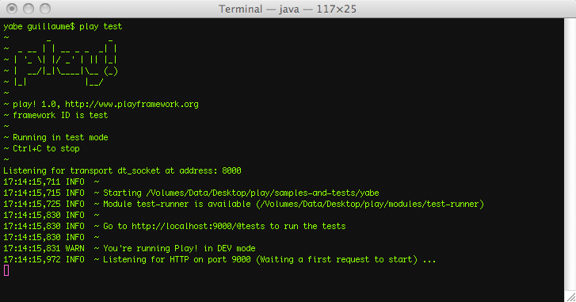

A first iteration of the data model
Here we will start to write the model for our blog engine.
Introduction to JPA
The model layer has a central position in a Play application (and in fact in all well-designed applications). It is the domain-specific representation of the information on which the application operates. As we want to create a blog engine, the model layer will certainly contain classes like User, Post and Comment.
Because most model objects need to survive between application restarts, we have to save them in a persistent datastore. A common choice is to use a relational database. But because Java is an object oriented language, we will use an object-relational mapper to help reduce the impedance mismatch.
The Java Persistence API (JPA) is a Java specification that defines a standard API for object-relational mapping. As an implementation of JPA, Play uses the well-known Hibernate framework. One advantage of using JPA over the standard Hibernate API is that all the ‘mapping’ is declared directly in the Java objects.
If you have used Hibernate or JPA before you will be surprised by the simplicity added by Play. No need to configure anything; JPA just works out of the box with Play.
If you don’t know JPA, you can read some of these simple presentations before continuing.
The User class
We will start to code the blog engine by creating the User class. Create a new file /yabe/app/models/User.java, and declare a first implementation of the User class:
package models;
import java.util.*;
import javax.persistence.*;
import play.db.jpa.*;
@Entity
public class User extends Model {
public String email;
public String password;
public String fullname;
public boolean isAdmin;
public User(String email, String password, String fullname) {
this.email = email;
this.password = password;
this.fullname = fullname;
}
}
The @Entity annotation marks this class as a managed JPA entity, and the Model superclass automatically provides a set of useful JPA helpers that we will discover later. All fields of this class will be automatically persisted to the database.
By default, the table name is ‘User’. If you change the configuration to use a database where ‘user’ is a reserved keyword, then you will need to specify a different table name for the JPA mapping. To do this, annotate the User class with @Table(name=“blog_user”).
It’s not required that your model objects extend the play.db.jpa.Model class. You can use plain JPA as well. But extending this class is a good choice in most cases as it will make a lot of the JPA stuff easier.
If you have used JPA before, you know that every JPA entity must provide an @Id property. Here the Model superclass provides an automatically generated numeric ID, and in most cases this is good enough.
Don’t think about this provided id field as a functional identifier but as a technical identifier. It is generally a good idea to keep both concepts separated and to keep an automatically generated numeric ID as a technical identifier.
Now if you’re a Java developer with any experience at all, warning bells are probably clanging like mad at the sight of a public variable. In Java (as in other object-oriented languages), best practice says to make all fields private and provide accessors and mutators. This is to promote encapsulation, a concept critical to object oriented design. In fact, Play takes care of that for you and automatically generates getters and setters while preserving encapsulation; we will see how it works later in this tutorial.
You can now refresh the application home page, to see the result. In fact, unless you made a mistake, you should not see any change: Play has automatically compiled and loaded the User class, but this does not add any new features to the application.
Writing the first test
A good way to test the newly created User class is to write a JUnit test case. It will allow you to incrementally complete the application model and ensure that all is fine.
To run a test case, you need to start the application in a special ‘test’ mode. Stop the currently running application, open a command line and type:
~$ play test

The play test command is almost the same as play run, except that it loads a test runner module that allows you to run test suite directly from a browser.
When you run a Play application in test mode, Play will automatically switch to the test framework ID and load the application.conf file accordingly. Check the framework ID documentation for more information.
Open a browser to the http://localhost:9000/@tests URL to see the test runner. Try to select all the default tests and run them; all should be green… But these default tests don’t really test anything.
To test the model part of the application we will use a JUnit test. As you can see, a default BasicTests.java already exists, so let’s open it (/yabe/test/BasicTest.java):
import org.junit.*;
import play.test.*;
import models.*;
public class BasicTest extends UnitTest {
@Test
public void aVeryImportantThingToTest() {
assertEquals(2, 1 + 1);
}
}
Remove the useless default test (aVeryImportantThingToTest) and create a test that tries to create a new user and retrieve it:
@Test
public void createAndRetrieveUser() {
// Create a new user and save it
new User("bob@gmail.com", "secret", "Bob").save();
// Retrieve the user with e-mail address bob@gmail.com
User bob = User.find("byEmail", "bob@gmail.com").first();
// Test
assertNotNull(bob);
assertEquals("Bob", bob.fullname);
}
As you can see, the Model superclass gives us two very useful methods: save() and find().
You can read more about the Model class’ methods in the Play manual’s JPA support chapter.
Select the BasicTests.java in the test runner, click start and check that all is green.
We will need a method on the User class that checks if a user with a specified username and password exists. Let’s write it and test it.
In the User.java source, add the connect() method:
public static User connect(String email, String password) {
return find("byEmailAndPassword", email, password).first();
}
And now the test case:
@Test
public void tryConnectAsUser() {
// Create a new user and save it
new User("bob@gmail.com", "secret", "Bob").save();
// Test
assertNotNull(User.connect("bob@gmail.com", "secret"));
assertNull(User.connect("bob@gmail.com", "badpassword"));
assertNull(User.connect("tom@gmail.com", "secret"));
}
Each time you make a modification you can run all the tests from the Play test runner to make sure you didn’t break anything.
The Post class
The Post class will represent blog posts. Let’s write a first implementation:
package models;
import java.util.*;
import javax.persistence.*;
import play.db.jpa.*;
@Entity
public class Post extends Model {
public String title;
public Date postedAt;
@Lob
public String content;
@ManyToOne
public User author;
public Post(User author, String title, String content) {
this.author = author;
this.title = title;
this.content = content;
this.postedAt = new Date();
}
}
Here we use the @Lob annotation to tell JPA to use a large text database type to store the post content. We have declared the relation to the User class using @ManyToOne. That means that each Post is authored by a single User, and that each User can author several Post instances.
Recent versions of PostgreSQL do not store String fields annotated with @Lob as text unless you also annotate the field with @Type(type = “org.hibernate.type.TextType”).
We will write a new test case to check that the Post class works as expected. But before writing more tests, we need to do something in the JUnit test class. In the current test, the database content is never deleted, so each new run creates more and more objects. This will soon become problematic, when more advanced tests count objects to check that all is fine.
So let’s write a JUnit setup() method to delete the database before each test:
public class BasicTest extends UnitTest {
@Before
public void setup() {
Fixtures.deleteDatabase();
}
…
}
The @Before concept is a core concept of the JUnit testing tool.
As you can see, the Fixtures class is a helper to deal with your database during tests. Run the test again to check that you haven’t broken anything, and start to write the next test:
@Test
public void createPost() {
// Create a new user and save it
User bob = new User("bob@gmail.com", "secret", "Bob").save();
// Create a new post
new Post(bob, "My first post", "Hello world").save();
// Test that the post has been created
assertEquals(1, Post.count());
// Retrieve all posts created by Bob
List<Post> bobPosts = Post.find("byAuthor", bob).fetch();
// Tests
assertEquals(1, bobPosts.size());
Post firstPost = bobPosts.get(0);
assertNotNull(firstPost);
assertEquals(bob, firstPost.author);
assertEquals("My first post", firstPost.title);
assertEquals("Hello world", firstPost.content);
assertNotNull(firstPost.postedAt);
}
Don’t forget to import the java.util.List or you will get a compilation error.
Adding Comments
The last thing that we need to add to this first model draft is the ability to attach comments to posts.
Creating the Comment class is pretty straightforward.
package models;
import java.util.*;
import javax.persistence.*;
import play.db.jpa.*;
@Entity
public class Comment extends Model {
public String author;
public Date postedAt;
@Lob
public String content;
@ManyToOne
public Post post;
public Comment(Post post, String author, String content) {
this.post = post;
this.author = author;
this.content = content;
this.postedAt = new Date();
}
}
Let’s write a first test case:
@Test
public void postComments() {
// Create a new user and save it
User bob = new User("bob@gmail.com", "secret", "Bob").save();
// Create a new post
Post bobPost = new Post(bob, "My first post", "Hello world").save();
// Post a first comment
new Comment(bobPost, "Jeff", "Nice post").save();
new Comment(bobPost, "Tom", "I knew that !").save();
// Retrieve all comments
List<Comment> bobPostComments = Comment.find("byPost", bobPost).fetch();
// Tests
assertEquals(2, bobPostComments.size());
Comment firstComment = bobPostComments.get(0);
assertNotNull(firstComment);
assertEquals("Jeff", firstComment.author);
assertEquals("Nice post", firstComment.content);
assertNotNull(firstComment.postedAt);
Comment secondComment = bobPostComments.get(1);
assertNotNull(secondComment);
assertEquals("Tom", secondComment.author);
assertEquals("I knew that !", secondComment.content);
assertNotNull(secondComment.postedAt);
}
You can see that navigation between Post and Comments is not very easy: we need to use a query to retrieve all comments attached to a Post. We can do better by setting up the other side of the relationship with the Post class.
Add the comments field to the Post class:
...
@OneToMany(mappedBy="post", cascade=CascadeType.ALL)
public List<Comment> comments;
public Post(User author, String title, String content) {
this.comments = new ArrayList<Comment>();
this.author = author;
this.title = title;
this.content = content;
this.postedAt = new Date();
}
...
Note how we have used the mappedBy attribute to tell JPA that the Comment class’ post field is the owning side that maintains the relationship. When you define a bi-directional relation with JPA it is important to specify which side will maintain the relationship. In this case, since Comment instances belong to a Post, we define the relationship on the Comment.post inverse relation.
We have set the cascade property to tell JPA that we want Post deletion be cascaded to comments. This way, if you delete a post, all related comments will be deleted as well.
With this new relationship, we will add a helper method to the Post class to simplify adding comments:
public Post addComment(String author, String content) {
Comment newComment = new Comment(this, author, content).save();
this.comments.add(newComment);
this.save();
return this;
}
Let’s write another test case to check that it works:
@Test
public void useTheCommentsRelation() {
// Create a new user and save it
User bob = new User("bob@gmail.com", "secret", "Bob").save();
// Create a new post
Post bobPost = new Post(bob, "My first post", "Hello world").save();
// Post a first comment
bobPost.addComment("Jeff", "Nice post");
bobPost.addComment("Tom", "I knew that !");
// Count things
assertEquals(1, User.count());
assertEquals(1, Post.count());
assertEquals(2, Comment.count());
// Retrieve Bob's post
bobPost = Post.find("byAuthor", bob).first();
assertNotNull(bobPost);
// Navigate to comments
assertEquals(2, bobPost.comments.size());
assertEquals("Jeff", bobPost.comments.get(0).author);
// Delete the post
bobPost.delete();
// Check that all comments have been deleted
assertEquals(1, User.count());
assertEquals(0, Post.count());
assertEquals(0, Comment.count());
}
Is it green?
Using Fixtures to write more complicated tests
When you start to write more complex tests, you often need a set of data to test on. Fixtures let you describe your model in a YAML file and load it at any time before a test.
Edit the /yabe/test/data.yml file and start to describe a User:
User(bob):
email: bob@gmail.com
password: secret
fullname: Bob
...
Well, because the data.yml file is a litle big, you can download it here.
Now we create a test case that loads this data and runs some assertions over it:
@Test
public void fullTest() {
Fixtures.loadModels("data.yml");
// Count things
assertEquals(2, User.count());
assertEquals(3, Post.count());
assertEquals(3, Comment.count());
// Try to connect as users
assertNotNull(User.connect("bob@gmail.com", "secret"));
assertNotNull(User.connect("jeff@gmail.com", "secret"));
assertNull(User.connect("jeff@gmail.com", "badpassword"));
assertNull(User.connect("tom@gmail.com", "secret"));
// Find all of Bob's posts
List<Post> bobPosts = Post.find("author.email", "bob@gmail.com").fetch();
assertEquals(2, bobPosts.size());
// Find all comments related to Bob's posts
List<Comment> bobComments = Comment.find("post.author.email", "bob@gmail.com").fetch();
assertEquals(3, bobComments.size());
// Find the most recent post
Post frontPost = Post.find("order by postedAt desc").first();
assertNotNull(frontPost);
assertEquals("About the model layer", frontPost.title);
// Check that this post has two comments
assertEquals(2, frontPost.comments.size());
// Post a new comment
frontPost.addComment("Jim", "Hello guys");
assertEquals(3, frontPost.comments.size());
assertEquals(4, Comment.count());
}
You can read more about Play and YAML in the YAML manual page.
Save your work
We have now finished a huge part of the blog engine. Now that we have created and tested all these things, we can start to develop the web application itself.
But before continuing, it’s time to save your work using Bazaar. Open a command line and type bzr st to see the modifications made since the last commit:
$ bzr st
As you can see, some new files are not under version control. The test-result folder doesn’t need to be versioned, so let’s ignore it.
$ bzr ignore test-result
Add all the other files to version control using bzr add.
$ bzr add
You can now commit your project.
$ bzr commit -m "The model layer is ready"
Go to the Building the first screen.